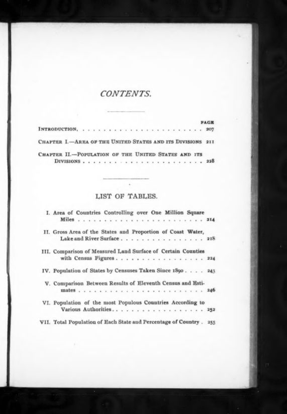

Willcox, 1897: o censo de 1890 errou a população do país?
Leitura: 12 min
Walter F. Willcox abre um curso de estatística social conferindo os números oficiais: mede de novo ilhas, compara o censo de 1890 com censos estaduais e conclui que a contagem errou menos de 1%.


Quanto mede Long Island? Em 1897, a resposta dependia da fonte. O boletim federal do censo de 1890 dava 1.007 milhas quadradas; o censo do estado de Nova York de 1875, apoiado em gazetteers mais antigos e seguido pela Encyclopaedia Britannica, dava 1.682. J. F. Hayford, ex-engenheiro do Coast Survey e então na Cornell, mediu a ilha duas vezes com o planímetro polar sobre uma carta do Coast and Geodetic Survey e chegou a uma média de 1.353,8. As duas autoridades divergiam em mais de 650 milhas quadradas, e cada uma errava em mais de 300.
O caso está em Area and Population of the United States at the Eleventh Census, de Walter F. Willcox, nº 4 do segundo volume dos Economic Studies, de agosto de 1897. O texto tem uma introdução à estatística social e dois capítulos, sobre a área e sobre a população dos Estados Unidos e das suas divisões, com sete tabelas. É a parte inicial de uma obra que o autor intitula Social Statistics O objetivo declarado é interessar os estudiosos da sociedade num método pouco familiar, mostrando-o em funcionamento.
O que é estatística?
A introdução parte do uso corrente, que Willcox toma como autoridade final. A palavra refere-se aos resultados de contagens em qualquer campo da realidade: no encontro do Instituto Internacional de Estatística em Chicago, em 1893, trabalhos sobre agricultura, ferrovias, educação, antropometria, casamento e divórcio e crime foram todos recebidos como estatísticos. Pela etimologia, a palavra vem do Estado como corpo político. No século XVI, em parte sob a influência de Maquiavel, o estudo prático da política recebeu em italiano o nome de ragione di stato, e daí vieram statista e os estudos úteis a quem queria servir a um Estado.
O sentido atual tem outra origem. A estatística herdou o nome, há quase um século, de um estudo nascido na Inglaterra e antes chamado aritmética política, que começou com John Graunt e as suas Natural and Political Observations, de 1662. Como os resultados do método de contagem continuam a ser sobretudo sociais, Willcox acha justificado o nome derivado da vida política organizada, e chama a sua obra de estatística social.
Quanto mede o país?
Área costuma ser tratada como dado indiscutível, mas, para Willcox, o estado imperfeito dos levantamentos americanos exige uma crítica; sem ela, a densidade da população seria questão de fé. A medição padrão, feita por Henry Gannett e F. DeY. Carpenter para o décimo censo, deu 3.025.600 milhas quadradas, excluídos o mar até três milhas e a parte americana dos Grandes Lagos. Somando a estimativa oficial do Alasca e a parte dos lagos calculada por Levasseur, Willcox chega a cerca de 3.607.950 milhas quadradas. Gannett advertiu-o, em carta, de que a área oficial do Alasca podia facilmente ter erro de 10%.
Os estados não escapam da crítica. As áreas oficiais terminam todas em zero ou cinco porque, explicou Gannett, não podiam ser dadas com precisão de unidade, salvo em dois ou três casos. Willcox divide-os em três grupos: os grandes, todos a oeste do Mississippi, ocupam 68% do país; os médios, 30,5%; os pequenos, cerca de 1,5%. As reservas indígenas cobriam 180.884 milhas quadradas em 1890, 6% do país, e encolheram quase 28% até 1896.
Nos condados, as dúvidas crescem. Eram cerca de 2.790 em 1890, com área média de 1.085 milhas quadradas, de 25 em Bristol, Rhode Island, a 29.236 em Yavapai, Arizona. As áreas foram revistas para o censo de 1890, mas Gannett escreveu ao autor que, onde faltavam mapas precisos dos limites, elas eram apenas aproximações muito grosseiras, sobretudo no Leste e no Sul.
Nas cidades, o problema era de definição. Para o boletim sobre estatísticas sociais das cidades, em alguns casos mediu-se apenas a área construída, o que o boletim não diz e foi admitido ao autor por correspondência. Daí discrepâncias como as de São Francisco, 50 ou 15 milhas quadradas, e de Nova Orleans, 187 ou 37. Como não há como saber em que cidades isso ocorreu, Willcox não aceita as medidas daquele boletim.
O capítulo fecha com o sentido pedagógico do exercício: formar no iniciante uma atitude de investigação independente, que o autor considera pré-requisito do estudo da estatística.
“a recusa de aceitar por autoridade qualquer fato” (a refusal to accept on authority any fact)
Quem conta como habitante?
O segundo capítulo começa pela palavra população, que já significou também o aumento do número de pessoas, sentido enfatizado na obra de Malthus e nos debates que ela provocou. Para o censo, o conceito precisa de data e de lugar. O décimo primeiro censo fixou 1º de junho de 1890, sem instruções sobre os nascidos ou mortos naquele dia; a prática estrangeira, que Willcox considera teoricamente preferível, fixa um momento, em geral a meia-noite. A unidade básica era o distrito de recenseamento, com cerca de 4 mil habitantes.
O Congresso Internacional de Estatística de São Petersburgo, em 1872, recomendou contar todos os presentes no distrito no momento de referência, regra quase universal na Europa, onde a contagem primária se completa em 24 horas. Nos Estados Unidos, a lei dava duas semanas nas cidades de mais de 10 mil habitantes e um mês nas demais, e contava os moradores pelo local habitual de residência, critério que deixava muito ao juízo do recenseador.
Que erros pode ter um censo?
Para Willcox, um censo não é um bloco único, mas a soma das respostas a muitas perguntas, cuja precisão varia com a região, o grupo social e a natureza da pergunta. Os erros vêm do público, por ignorância ou má vontade; dos recenseadores; e do escritório central. As perguntas sobre doenças, defeitos físicos e mentais, delinquência e dependência foram, a seu ver, as que mais desagradaram em 1890 e as de respostas menos corretas. Rivalidades entre cidades levaram a exageros deliberados, como em Minneapolis e St. Paul, onde houve recontagem.
Willcox examina também a administração. Considera que duas críticas não foram adequadamente respondidas: que a carreira e a obra publicada do superintendente, R. P. Porter, não eram as de um estatístico independente, e que a regra legal de escolher recenseadores só pela aptidão, sem levar em conta a filiação partidária, foi aplicada com menos rigor que em 1880. Registra, por outro lado, sinais de supervisão cuidadosa: as instruções aos 40 mil recenseadores ocupavam 46 páginas, mais que o dobro das anteriores, e cinco sextos dos especialistas e chefes tinham experiência no censo de 1880. Conclui que a lei era melhor que qualquer uma anterior à de 1879, mas a administração foi algo inferior à do décimo censo.
O censo de 1890 errou a população?
Willcox enumera quatro maneiras de impugnar um censo: mostrar falhas na lei ou na administração; achar contradições internas; comparar com outra contagem, mais precisa, da mesma época; e comparar com a série de contagens anteriores e posteriores. A última, a mais importante, só seria plenamente possível com o censo seguinte. Mas os censos estaduais feitos antes e depois de 1890 permitiam um teste parcial: estimar a população de cada estado em junho de 1890 a partir dessas contagens e confrontar o resultado com o número federal.
Para interpolar, há dois métodos: o aritmético, que supõe um acréscimo constante por ano, e o geométrico, que supõe uma taxa constante, diferença semelhante à que existe entre juros simples e compostos. Nenhuma população cresce de uma ou de outra forma, adverte. Como a taxa de crescimento americana parecia em queda, o geométrico tenderia a dar resultados pequenos demais; Willcox prefere ligeiramente o aritmético, mas aplica os dois a onze estados e à cidade de Nova York, que somam mais de 27% da população do país.
O autor diz que a sua opinião mudou com o estudo e que agora está convencido de que a contagem deve ser aceita. Cita, com permissão, uma carta de julho de 1897 de Carroll D. Wright, comissário do Trabalho e então chefe do décimo primeiro censo, para quem a falta em alguns lugares foi em parte compensada por duplicações inevitáveis em outros.
“o décimo primeiro censo chegou a menos de 1% da contagem verdadeira dos habitantes” (the Eleventh Census came within less than one per cent, of the true enumeration of the inhabitants)
Quantas pessoas há no mundo?
O capítulo então sai dos Estados Unidos. Em 1761, Süssmilch estimara a população da Terra entre mil e 1.100 milhões, supondo que a Ásia, cinco vezes maior que a Europa, fosse igualmente povoada. As melhores autoridades de 1897 punham o número quase 50% acima disso. Em 1880, 626 milhões de pessoas tinham sido contadas ou apuradas por registro; agora o método estatístico já alcançava 836 milhões, cerca de cinco nonos do total estimado. O maior problema em aberto era a China, cujas estimativas divergiam em quase 200 milhões.
Pela população, Willcox define como grande potência a que tem 35 milhões de habitantes ou mais. São dez, com cerca de quatro quintos da humanidade, e os Estados Unidos ocupam o quinto lugar, com perto de um vinte e cinco avos da população da Terra. Mesmo o número americano variava entre os anuários, e ele rastreia a causa: o escritório do censo publicou três números diferentes para o Alasca, um provisório e dois finais, sem explicar o conflito.
A última tabela ordena os estados pela população total. Os oito mais populosos formam uma faixa, com uma só interrupção, da baía de Massachusetts ao Rio Grande, e os dez primeiros reúnem mais da metade do país. Os oito menos populosos somam 700.434 habitantes, mais ou menos os do Maine ou de Connecticut, em mais de dois quintos do território. Só Nevada e Alasca perderam população na década. Nos condados, a população ia de 3 pessoas, em Mackenzie, Dakota do Norte, e em Loving, Texas, a mais de 1,5 milhão no condado de Nova York.
O texto termina indicando o passo seguinte: como comparar populações sem considerar a área engana, a densidade fica reservada para outro estudo.
Na minha leitura
Na minha leitura, o estudo é um manual de auditoria de dados antes de ser um texto de demografia. Willcox trata cada número oficial como hipótese de trabalho: confere a área com medições independentes, testa a contagem com fontes externas e explicita as suposições de cada método de estimativa. A diferença entre os métodos aritmético e geométrico, que ele expõe com a analogia dos juros simples e compostos, continua a ser uma escolha de modelo com efeitos práticos sobre qualquer estimativa intercensitária.
Há também uma lição institucional. Ao discutir a forma de pagamento dos recenseadores, as regras de nomeação e os boletins provisórios que geram erros difíceis de corrigir, Willcox mostra que a qualidade de uma estatística depende tanto do desenho administrativo quanto do método. A confiança do público, que ele chama de pré-requisito quase indispensável de um bom censo, é um ativo que se perde mais depressa do que se constrói.
Glossário
- Estatística social
- aplicação do método de contagem ao estudo da vida social; na obra de Willcox, começa pela demografia.
- Aritmética política (political arithmetic)
- nome inglês antigo do estudo da sociedade por contagens, iniciado por John Graunt em 1662.
- Planímetro polar
- instrumento que mede áreas percorrendo o contorno de uma figura num mapa.
- População de fato
- contagem de todos os presentes num lugar num momento dado, regra europeia citada por Willcox.
- População de direito
- contagem dos moradores pelo local habitual de residência, regra do censo americano.
- Interpolação aritmética
- estimativa que supõe um acréscimo absoluto constante de população por ano.
- Interpolação geométrica
- estimativa que supõe uma taxa de crescimento constante, como juros compostos.
- População constitucional
- base da distribuição de cadeiras na Câmara, sem os residentes de territórios e reservas.
Fontes
- Area and Population of the United States at the Eleventh Census (pp. 207–257). Internet Archive (número completo, PDF)
- Número completo digitalizado (domínio público): Internet Archive.
Documento em domínio público (EUA, publicado antes de 1931), via JSTOR Early Journal Content e Internet Archive. Resumo e comentário do autor deste site, sem afiliação com a American Economic Association. Encontrou um erro? Escreva: a correção é publicada no próprio texto, com data.
← ES 9 · Plehn, 1897: por que o imposto sobre a propriedade falhou na Califórnia ES 11 · Douglass, 1740: quem perdia com o papel-moeda das colônias? →